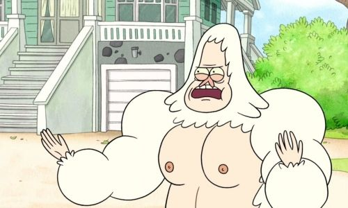
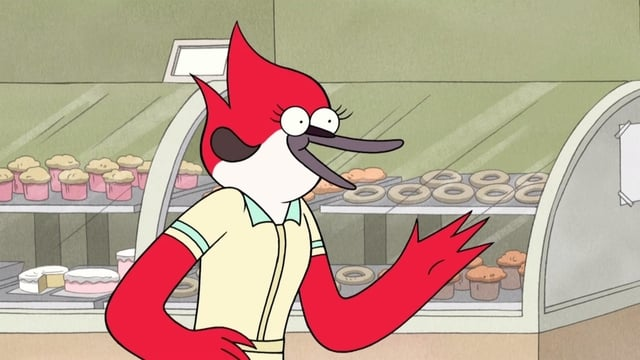
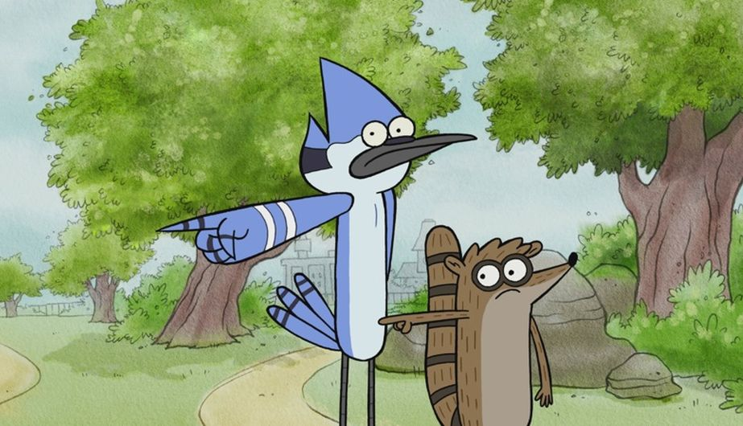
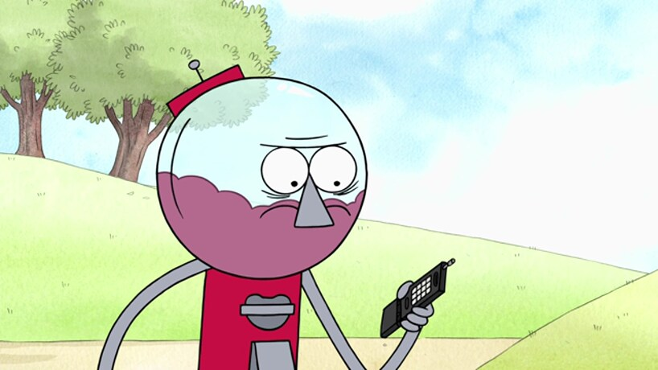
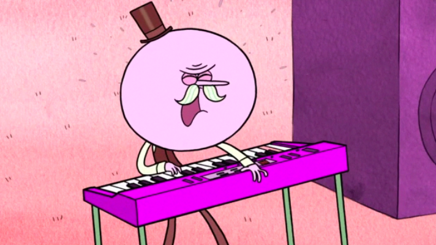

La serie gira en torno a la vida cotidiana de dos haraganes que son amigos, Mordecai un estudiante de arte de 23 años y Rigby un preparatoriano que abandonó la escuela.
Trabajan como jardineros en un parque y pasan sus días tratando de evitar por cualquier medio el trabajo.





¿Qué tanto sabes sobre la serie?